Greenbrair / Catbrair
Scientific name: Smilax spp.
Abundance: plentiful
What: tender vines (portion easily snapped off by hand), tendrils, tubers, leaves, berries
How: vines and tendrils are eaten raw, steamed or baked; roots are sliced, then pounded and boiled to free starch; berries eaten raw or made into jams or jelly
Where: shady forests
When: All year
Nutritional Value: tubers high in starch & minerals; leaves & stems high assorted vitamins and minerals.
Other uses: Vegan jello shots
Dangers: Pick from vines containing both thorns and tendrils only.
Edible tip of greenbriar (bullbriar) vine.
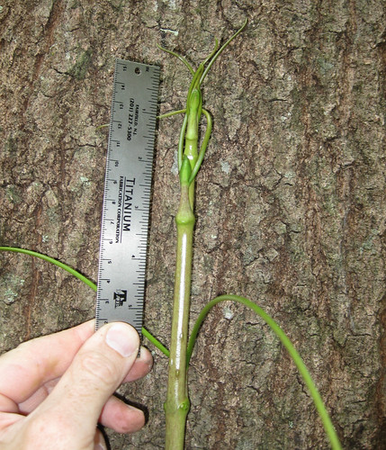
Close-up of greenbriar (bullbriar) vine tip.
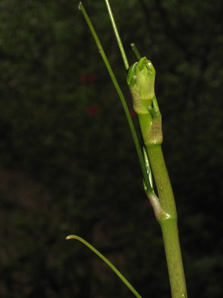
Edible tip of other Greenbriar. Note the thorns and two tendrils at base of leaf.
Greenbriars and Catbriars are the only vines with both thorns and tendrils.
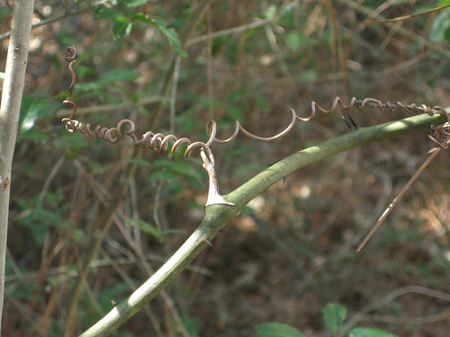
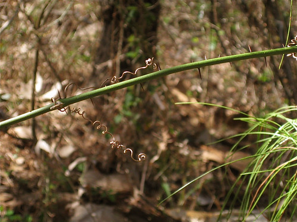
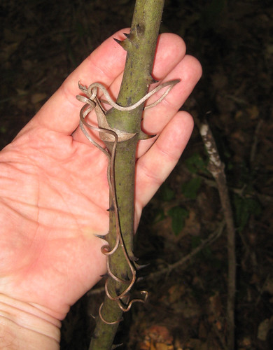
Greenbriar (bullbriar) tubers and vines.
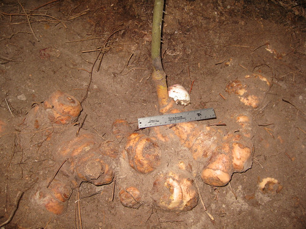
Same tuber body as above after digging up. The youngest, best tuber will be the white one next to where the vine joins the tubers.
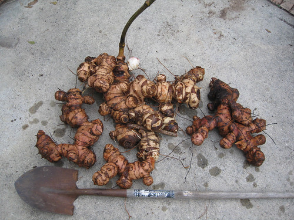
This is an ideal Greenbriar tuber!
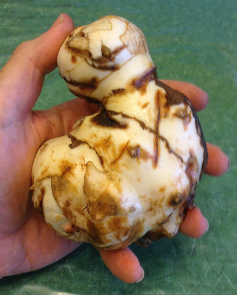
Some tubers turned up by a construction crew.
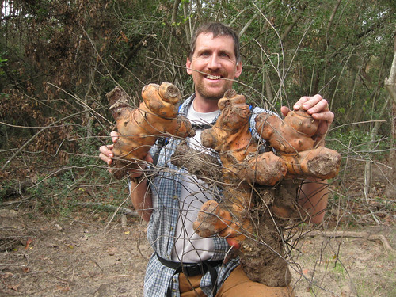
Close-up of greenbriar (bullbriar) tuber.
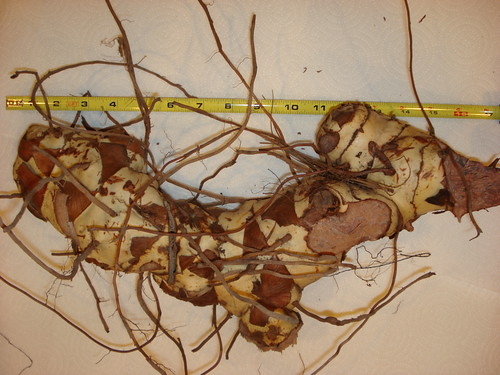
Berries in January. They have a slight sweet taste and contain 1-2 inedible seeds.
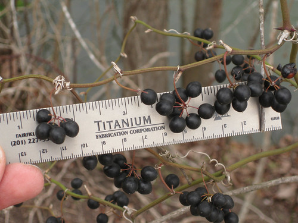
Slicing up a tuber in preparation for collecting it's starch.
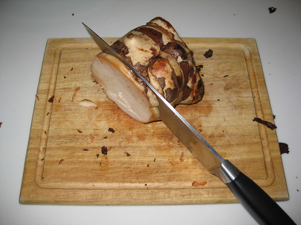
Dried slices of greenbriar (bullbriar) naturally turn reddish-orange.

Leaves of different types of Catbriar. They are all palmate-veined.
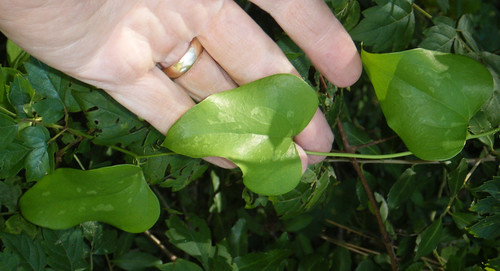
Edible tip of catbriar.
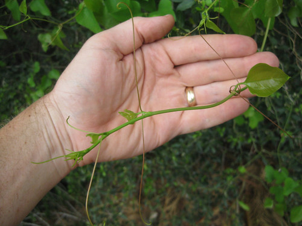
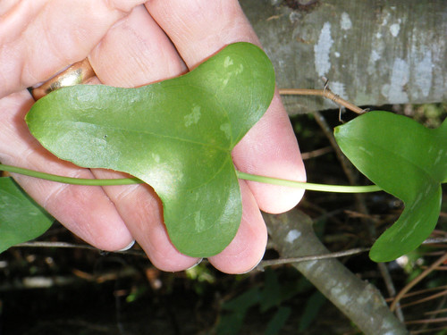
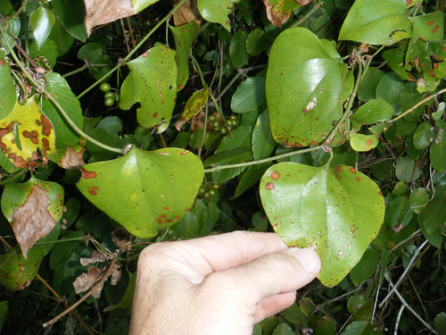
If there's woods near you there's likely Greenbriar in those woods! Greenbriar is one of the best wild foods available as it can be found in immense quantities all year-round, it's vine tips taste really good, they are very nutritious, and its tubers are a great source of calories. Greenbriars are the only vines that have both tendrils and thorns making them easy to identify.
To find the edible tips just pull on the greenbriar vine until you get to it's top end. You can eat any soft, tender portion of the plant (stem, leaves, and tendrils). The vines may grow as a single stalk or branch out into many vines ranging in diameter from 1/8" to over 3/4". Multiple branching vines are more common with smaller-diameter plants. These above ground portions of the plant can all be eaten raw, the leaves and tendrils can also be cooked like spinach, and the vines can cooked like asparagus.
Track the thickest vines back to their buried tubers. These tubers can form a mass up to 75 pounds but are difficult to dig due to their many long roots. Due to their highly fibrous nature, Greenbriar tubers can't be used like potatoes. The starch produced from the tubers may have an astringent, odd taste but it is rich in calories. It is exceptionally good at thickening stews and even water to the point of becoming almost Jello-like. Native Americans would slow roast the tubers under a fire for several days, then chew the cooked starch out of the tubers and spit out the fibers. The youngest tubers are the best to harvest. They will be the lightest in color though the color may be white, light pink, light purple or light yellow.
The starch was also collected by slicing the tubers into 1/4" disks, letting them dry in the sun for a few days, then crumbing the disks in a large bowl of water. The granules of starch fall to the bottom of the bowl and the fibers float to the top. The water and fibers were discarded and the starch was dried and then ground up for use as flour. It still has a bitter taste but it'll give you calories.
The tubers can also be shaved into small pieces and then boiled to make a tea. I prefer to first roast the tubers under a hot fire for a while to the point where their outer skin begins to blacken. Peel off the burned parts, dice up the rest then boil in water to make a vaguely root beer/caramel flavored tea. Getting the right amount of roasting to get this flavor requires some practice.